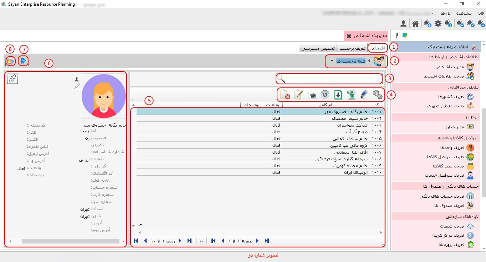
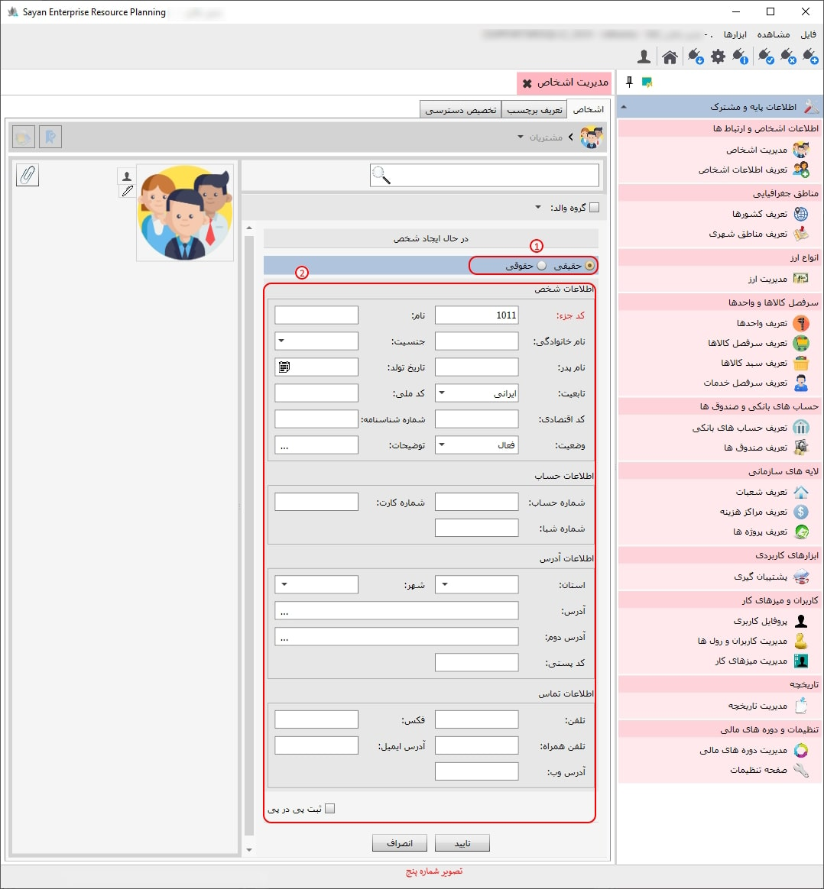

در این بخش، میتوانید اطلاعات مربوط به اشخاصی که با آنها در ارتباط هستید، اعم از سهامداران، کارکنان و تأمینکنندگان، تعریف نمایید.

برای ادامه ی مطلب به تصویر شماره دو مراجعه نمایید.
-اشخاص (کادر شماره یک): در این قسمت، با توجه به انتخاب برچسبهایتان، اشخاص مرتبط با آن برچسب برایتان نمایان میشود.
نکته: اگر تمامی برچسبها را انتخاب نمایید، در این صورت تمامی اشخاصی که تعریف کردهاید برایتان نمایان میشود.
-همه برچسبها (کادر شماره دو): پس از انتخاب سربرگ اشخاص، ابتدا باید نوع برچسبی که میخواهید مشاهده کنید یا در آن شخصی را ایجاد، ویرایش، حذف و فیلتر نمایید.
-کادر شماره سه: برای جستجوی سریع اشخاص، شما میتوانید با تایپ بخشی از کد شخص یا نام خانوادگی، بهصورت لحظهای فهرستی از افراد مرتبط با جستجوی خود را مشاهده کنید. این ویژگی به شما این امکان را میدهد تا بهراحتی و با سرعت، اطلاعات موردنظر را پیدا کنید و در وقت خود صرفهجویی نمایید.
-کادر شماره چهار: در این بخش، فهرستی از تمامی اشخاص حقیقی و حقوقی که بهطور مشخص تعریف شدهاند، قابل مشاهده است.
-کادر شماره پنج: این قسمت، این امکان را به شما میدهد که اطلاعات شخص مدنظر خود را مشاهده کنید.
-کادر شماره شش: این بخش به شما این امکان را میدهد که تیک مربوط به برچسب شخص موردنظر خود را انتخاب کنید.
-کادر شماره هفت: این بخش به شما این امکان را میدهد که تمامی اشخاص و گروهها را مشاهده کنید، حتی اگر شخصی برچسب نداشته باشد.

این بخش به شما این امکان را میدهد که افراد موردنظر خود را تعریف کنید. قبل از انجام این کار، لطفاً برچسب مناسب را انتخاب کنید تا بتوانید از طریق آیکون مربوطه آنها را تعریف نمایید.
برای ادامه مطلب به تصویر شماره سه مراجعه نمایید.

-کادر شماره یک: در این بخش، اگر فرد مورد نظر شما حقیقی است، بر روی گزینه حقیقی کلیک کنید.
-کد جزء (کادر شماره دو): در این بخش، کد جزء بهصورت پیشفرض برای شما ایجاد میشود. به همین دلیل نیازی به تغییر در کد جزء نیست.
-نام (کادر شماره سه): در این قسمت، میبایست نام شخص حقیقی خود را وارد نمایید.
برای ادامه مطلب به تصویر شماره چهار مراجعه نمایید.

-کادر شماره یک: در این بخش، اگر فرد مورد نظر شما حقوقی است، بر روی گزینه حقوقی کلیک کنید.
-کد جزء (کادر شماره دو): در این بخش، کد جزء بهصورت پیشفرض برای شما ایجاد میشود. به همین دلیل نیازی به تغییر در کد جزء نیست.
-نام سازمان (کادر شماره سه): در این قسمت، میبایست نام سازمان مدنظر خود را وارد نمایید.
برای ادامه ی مطلب به تصویر شماره پنج مراجعه نمایید.
-تعریف برچسب(کادر شماره یک): در این بخش میتوانید برچسبهای مورد نیاز خود را تعریف کنید.
-کادر شماره دو: این بخش به شما این امکان را میدهد که تمامی برچسبهایی را که تعریف کردهاید، مشاهده کنید. همچنین، در صورت نیاز، میتوانید تغییرات و ویرایشهای لازم را اعمال نمایید.
این قسمت، این امکان را به شما میدهد که برچسب مدنظر خود را از طریق این آیکون ایجاد نمایید.
برای ادامه مطلب به تصویر شماره شش مراجعه نمایید.

-کد (کادر شماره یک): در این بخش، کد بهصورت پیشفرض برای شما ایجاد میشود و به همین دلیل نیازی به تغییر در کد نیست.
-عنوان(کادر شماره دو): در این بخش، می بایست عنوان برچسب مورد نظر خود را وارد نمایید.
-وضعیت (کادر شماره سه): در این بخش، وضعیت فعال یا غیرفعال بودن برچسب مدنظر خود را وارد نمایید.
-توضیحات(کادر شماره چهار): در این قسمت میتوانید در صورت نیاز، توضیحات مربوط به برچسب مورد نظر خود را وارد کنید.
برای ادامه مطلب به تصویر شماره هفت مراجعه نمایید.

-تخصیص دسترسی (کادر شماره یک): این قسمت به شما این امکان را میدهد که برچسبهای مورد نظر خود را به رول مدنظر اختصاص دهید.
-کادر شماره دو: در این قسمت میتوانید تمامی رولهای خود را مشاهده کنید.
-موارد انتخاب شده (کادر شماره سه): در این بخش میتوانید موارد انتخاب شده را به انتخاب نشده انتقال دهید.
-موارد انتخاب نشده (کادر شماره چهار): این فیلد این امکان را به شما میدهد که موارد انتخاب نشده را به موارد انتخاب شده منتقل کنید.

-کادر شماره پنج: برای اضافه کردن موارد انتخابنشده، از این آیکون میتوانید استفاده کنید.

-کادر شماره شش: در این آیکون میتوانید برای حذف موارد انتخابشده استفاده نمایید.